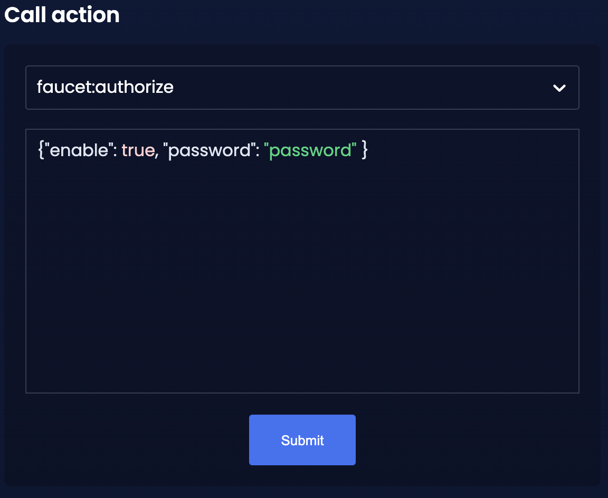

How to enable a faucet for testing
The Faucet plugin provides a user interface in the browser to receive a certain amount of tokens on request. The Faucet plugin is a useful tool to use in devnets or testnets.
The faucet plugin includes the following features:
-
It enables sending tokens to different accounts from a faucet for testing.
-
It allows customizing the faucet UI with a custom logo and application URL.
One account is always connected to the faucet, to provide the tokens to be distributed through the faucet. To prevent the faucet from running dry, the faucet account should always have an adequate enough balance to be able to provide the requested tokens to users.
1. Installation
To register the Faucet plugin, first install it with NPM:
npm i @liskhq/lisk-framework-faucet-pluginNow open plugins.ts, import the Faucet plugin, and register it with the application as shown below:
/* eslint-disable @typescript-eslint/no-empty-function */
import { Application } from 'lisk-sdk';
import { FaucetPlugin } from "@liskhq/lisk-framework-faucet-plugin";
// @ts-expect-error Unused variable error happens here until at least one module is registered
export const registerPlugins = (app: Application): void => {
app.registerPlugin(FaucetPlugin);
};Save and close plugins.ts.
2. Configuration
Choose one account with a high enough token balance as the token source for the faucet.
For example, use one of the genesis delegates for the faucet account, e.g. the first account in accounts.json, which was generated during How to create a new genesis block.
[
{
"passphrase": "brush swamp sign omit cabin review menu tent spend shy plug strategy",
"address": "49e8b0411cd96a17a72f88dfe802179b4113924f"
},
// ...
]Use Lisk Commander to encrypt the passphrase of the account with a password. Save the password securely as it will be required to enable and disable the faucet later.
$ lisk passphrase:encrypt
? Please enter passphrase: [hidden]
? Please re-enter passphrase: [hidden]
? Please enter password: [hidden] (1)
? Please re-enter password: [hidden]
{"encryptedPassphrase":"iterations=1000000&cipherText=643bfbf1b6f1dc0ce740dd9fc9f27a682e476dc5de4e6c023deded4d3efe2822346226541106b42638db5ba46e0ae0a338cb78fb40bce67fdec7abbca68e20624fa6b0d7&iv=8a9c461744b9e70a8ba65edd&salt=3fe00b03d10b7002841857c1f028196e&tag=c57a798ef65f5a7be617d8737828fd58&version=1"}| 1 | Choose a simple password to encrypt the passphrase symmetrically.
The password will be required later to enable the faucet plugin through the action faucet:authorize. |
Open the config file of the blockchain application and scroll down to the bottom of the file.
Add the required configuration options for the faucet plugin under the key plugins.faucet:
-
encryptedPassphrase: The encrypted passphrase of the account that will provide the tokens for the faucet. -
captchaSecretkey: The secret API key for the captcha. -
captchaSitekey: The API site key for the captcha.
The free site key and secret key for reCAPTCHA are used below for testing purposes.
"plugins": {
"faucet": {
"encryptedPassphrase": "iterations=1000000&cipherText=643bfbf1b6f1dc0ce740dd9fc9f27a682e476dc5de4e6c023deded4d3efe2822346226541106b42638db5ba46e0ae0a338cb78fb40bce67fdec7abbca68e20624fa6b0d7&iv=8a9c461744b9e70a8ba65edd&salt=3fe00b03d10b7002841857c1f028196e&tag=c57a798ef65f5a7be617d8737828fd58&version=1",
"captchaSecretkey": "6LeIxAcTAAAAAGG-vFI1TnRWxMZNFuojJ4WifJWe",
"captchaSitekey": "6LeIxAcTAAAAAJcZVRqyHh71UMIEGNQ_MXjiZKhI"
}
}Start the blockchain application again:
./bin/run startWait until the application start is completed.
3. Enable the Faucet plugin
If the Dashboard plugin is enabled as described in the guide Using dashboard with the blockchain application, then the dashboard can be used to enable the Faucet plugin.
Go to http://localhost:4005 to access the dashboard.
Now go to the Call actions section on the Dashboard, and select the action faucet:authorize.

The action expects a boolean as an input defining if the plugin should be enabled, and also a password to decrypt the encrypted passphrase that was saved in config.json above.
Add the following JSON object to the field for the asset data:
{
"enable": true,
"password": "myPassword" (1)
}| 1 | Change this to the password used above to encrypt the passphrase in the Faucet plugin configuration. |
Click on the Submit button to invoke the action. It should now be possible to see the confirmation message that the action was invoked successfully.

Alternatively, choose a different method to send an RPC request to the node, for example use the apiClient as described below.
Use the apiClient of the lisk-client package and write a small script to invoke the action:
const { apiClient } = require('@liskhq/lisk-client');
let clientCache;
const getClient = async () => {
if (!clientCache) {
clientCache = await apiClient.createWSClient('ws://localhost:8080/ws');
}
return clientCache;
};
const enableFaucet = async () => {
const client = await getClient();
const result = client.invoke('faucet:authorize',{"enable":true,"password":"password"});
return result;
};
enableFaucet().then((val) => {
console.log('val:',val);
});It is now possible to use the faucet under http://localhost:4004 .